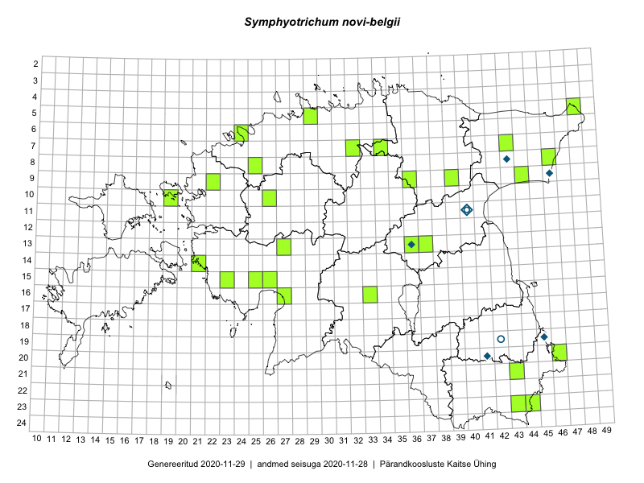

Symphyotrichum novi-belgii — õiekas sügisaster
Kaardile koondatud taksonid: Aster novi-belgii L. (38)

Kaart põhineb 38 kirjel, neist:
vaatlusi 7
eksemplare 31
Kaasaegsed1 leiukohad asuvad 29 ruudus.
Andmed “Eesti taimede levikuatlasest”,2 sulgudes ruutude arv:3
● 1971–2005 (0)
○ 1921–1970 (0)
△ kuni 1920 (0)
+ hävinud (0)
? kaheldav (0)
Lisaruudud teistest andmebaasidest:4
ELF: 2006– . . . (0)
PKÜ: 2006– . . . (0)
ELF: 1971–2005 (0)
PKÜ: 1997–2005 (0)
| Ruut | Vaatleja(d) | Vaatlusaeg | Kirje PlutoFis |
|---|---|---|---|
| 19-45 | Toomas Kukk, Timo Luhamäe, Kersti Tambets, Sten Mander, Janika Sammasto | 2014-07-29 | ruut/ala: Aster novi-belgii L. |
| 17-13 | Mari Reitalu, Oliver Parrest | 2015-08-12 | ruut/ala: Aster novi-belgii L. |
| 15-11 | Meeli Mesipuu, Toomas Kukk, Mari Reitalu | 2016-10-07 | ruut/ala: Aster novi-belgii L. |
| 15-16 | Mari Reitalu | 2007-05-03 | ruut/ala: Aster novi-belgii L. |
| 15-16 | Mari Reitalu | 2007-05-03 | ruut/ala: Aster novi-belgii L. |
| 16-12 | Mari Reitalu | 2015-10-11 | punkt: Aster novi-belgii L. |
| 17-13 | Mari Reitalu | 2018-07-24 | punkt: Aster novi-belgii L. |
| 09-44 | Toomas Kukk | 2007-10-14 | TAA0078337: Aster novi-belgii L. |
| 09-44 | Toomas Kukk | 2007-10-14 | TAA0078338: Aster novi-belgii L. |
| 15-25 | Toomas Kukk | 2009-09-11 | TAA0076887: Aster novi-belgii L. |
| 15-25 | Toomas Kukk | 2009-09-11 | TAA0076888: Aster novi-belgii L. |
| 15-25 | Toomas Kukk | 2009-09-11 | TAA0076889: Aster novi-belgii L. |
| 13-36 | Raivo Kalle | 2016-08-17 | TAA0133289: Aster novi-belgii L. |
| 13-36 | Raivo Kalle | 2016-08-17 | TAA0133290: Aster novi-belgii L. |
| 13-37 | Raivo Kalle | 2016-09-16 | TAA0133291: Aster novi-belgii L. |
| 13-37 | Raivo Kalle | 2016-09-16 | TAA0133292: Aster novi-belgii L. |
| 07-32 | Peedu Saar, Ott Luuk | 2016-09-28 | TAA0133857: Aster novi-belgii L. |
| 06-24 | Peedu Saar, Ott Luuk | 2016-09-06 | TAA0133862: Aster novi-belgii L. |
| 23-44 | Peedu Saar, Karin Kikas | 2016-08-19 | TAA0133863: Aster novi-belgii L. |
| 16-27 | Indrek Tammekänd | 2015-09-19 | TAA0136069: Aster novi-belgii L. |
| 08-25 | Tõnu Ploompuu | 2015-08-17 | TAA0118998: Aster novi-belgii L. |
| 10-26 | Ott Luuk, Peedu Saar | 2016-09-05 | TAA0139092: Aster novi-belgii L. |
| 10-26 | Ott Luuk, Peedu Saar | 2016-09-05 | TAA0139093: Aster novi-belgii L. |
| 14-21 | Indrek Tammekänd | 2016-09-09 | TAA0139733: Aster novi-belgii L. |
| 15-26 | Indrek Tammekänd | 2016-08-30 | TAA0140048: Aster novi-belgii L. |
| 08-46 | Ott Luuk | 2016-08-10 | TAA0139254: Aster novi-belgii L. |
| 23-43 | Ott Luuk | 2015-08-12 | TAA0142457: Aster novi-belgii L. |
| 16-27 | Indrek Tammekänd | 2017-09-30 | TAA0141409: Aster novi-belgii L. |
| 05-29 | Toomas Kukk | 2011-10-10 | TAA0115167: Aster novi-belgii L. |
| 09-39 | Toomas Kukk, Peedu Saar | 2017-09-28 | TAA0141952: Aster novi-belgii L. |
| 10-19 | Meeli Mesipuu, Ott Luuk | 2016-09-15 | TAA0144092: Aster novi-belgii L. |
| 13-27 | Krista Auksmann | 2007-09-08 | TAA0114973: Aster novi-belgii L. |
| 15-23 | Peedu Saar, Toomas Kukk | 2018-09-20 | TAA0145683: Aster novi-belgii L. |
| 16-33 | Indrek Tammekänd | 2018-10-11 | TAA0146159: Aster novi-belgii L. |
| 09-22 | Peedu Saar, Toomas Kukk | 2019-09-19 | TAA0149325: Aster novi-belgii L. |
| 20-46 | Peedu Saar, Ott Luuk | 2019-09-24 | TAA0149329: Aster novi-belgii L. |
| 05-48 | Timo Luhamäe, Peedu Saar | 2019-09-12 | TAA0149912: Aster novi-belgii L. |
| 07-43 | Ott Luuk, Meeli Mesipuu | 2019-09-12 | TAA0150330: Aster novi-belgii L. |
Kaasaegsed leiukohad (tähistatud värvitud ruutudega) põhinevad peamiselt 2014–2019 välitööandmetel. Väiksemal määral on andmebaasi kantud vanemaid leiuandmeid aastatest 2006–2013.↩︎
Kukk, T., Kull, T., Eesti taimede levikuatlas. Eesti Maaülikool, Põllumajandus- ja Keskkonnainstituut, Tartu, 2005.↩︎
NB! 2005. aasta atlase andmestikus katavad uuemad leiud vanemaid. Näiteks kui liik on ruudus registreeritud 1971–2005, siis pole võimalik öelda, kas ta oli sellest ruudust teada ka enne 1970. aastat. Vana atlase andmetel hävinud ja kaheldavaid leiukohti pole hilisemate (taas)leidude põhjal korrigeeritud.↩︎
Eestimaa Looduse Fondi (ELF) ja Pärandkoosluste Kaitse Ühingu (PKÜ) andmebaasid sisaldavad inventeeritud koosluste kirjeldusi ja liigiloendeid. Neist andmekogudest on kaardile lisatud lisatud vaid need ruudud, millest uue atlase andmekogus taksoni kohta kirjeid veel pole. Kõrvale on jäetud teadaolevalt kaheldavad määrangud. Kaartidel katavad uuema perioodi andmed vanemaid, PKÜ omad ELFi omi. Kattumise tõttu võib kaardil näha olla vähem mingi kategooria ruute kui legendis olev arv näitab. ELFi ja PKÜ andmed ei kajastu hetkel vaatluste tabelis ega ruutude liigiloendites.↩︎